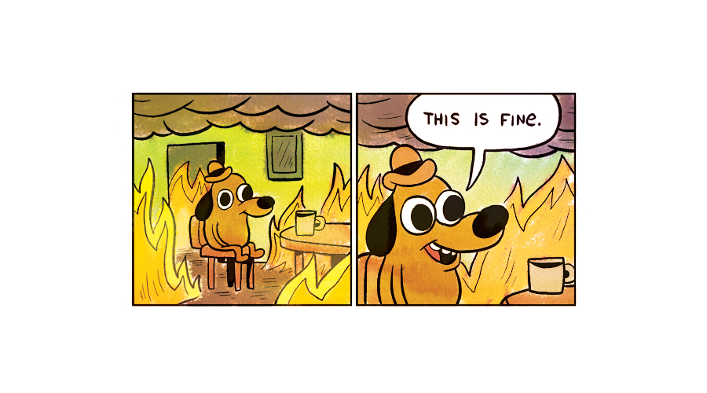
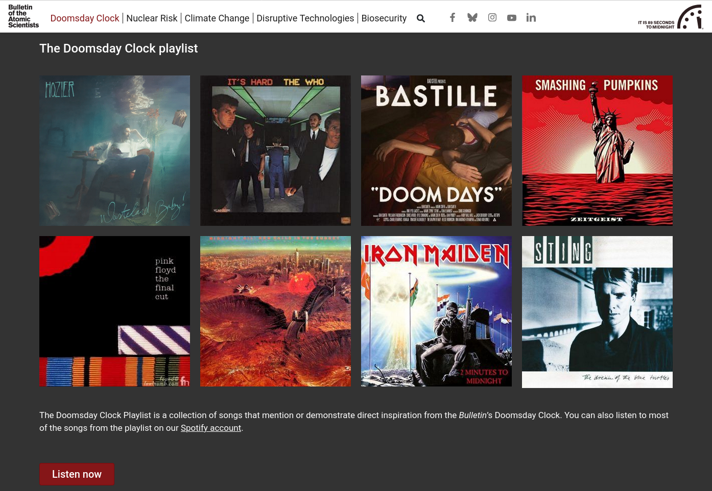
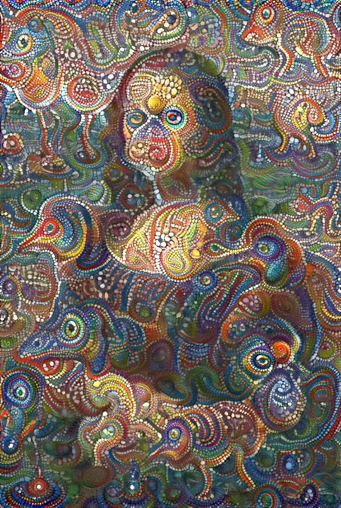
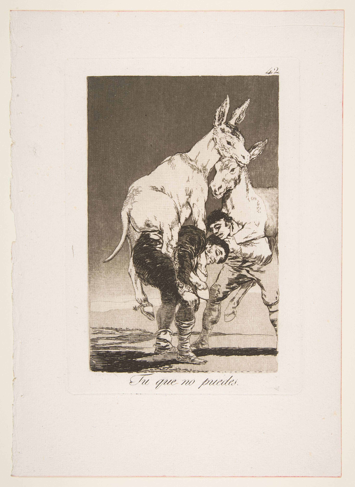
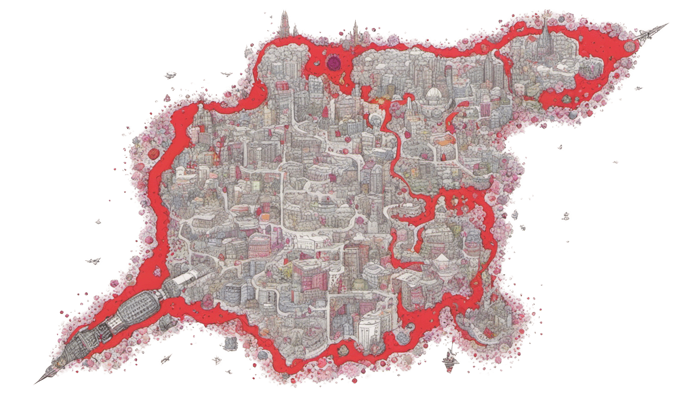
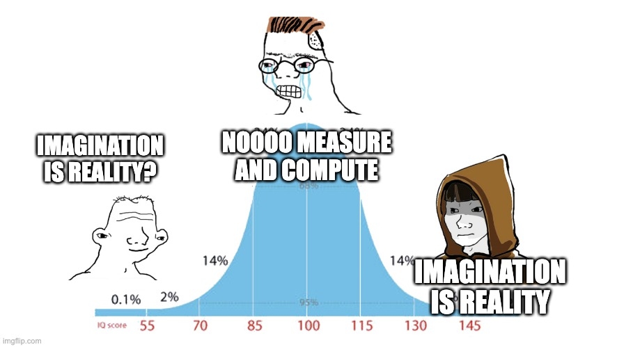

Laura Summers & Andy Kitchen
"I swear an oath"
"To share no insights from tomorrow's tomorrows"
"I will not exploit future knowledge for personal gain"
"And I definitely won't launch ZeitCoin"
"If anyone asks about quantum pandas"
"I'll say I read about it on Stack Overflow"
By looking at this slide you complete the legally binding contract
👈 By User:Bibi Saint-Pol, own work, 2007-02-08, Public Domain, commons.wikimedia.org/w/index.php?curid=1959071
👆 By Byzantium565 - Own work, CC BY-SA 4.0, commons.wikimedia.org/w/index.php?curid=112623925
“It's the end of the world every day, for someone.” ― Margaret Atwood, The Blind Assassin
― Margaret Atwood, The Blind Assassin


Def: Hyper + Superstition

- Yogi Berra



Thank you